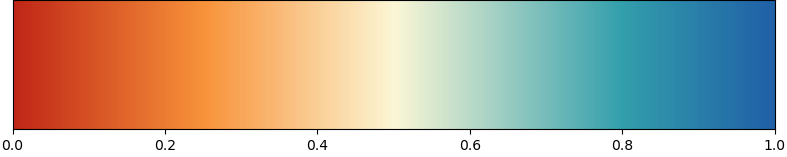

Colors module
Make sure you know about
- matplotlib color maps
- Palettable: many beautiful color palettes
Load the color module:
import plottools.colors as c
Color palettes
The color module provides a few color palettes as dictionaries that reference colors by standard color names.
c.color_palettes
is a dictionary referencing all color palettes provided by the module by their name.
For example
colors = c.color_palettes['muted']
colors['red']
returns the red color of the colors_muted palette. The returned
colors are valid matplotlib colors and can be passed on to the color,
facecolor, edgecolor, etc. arguments of the various matplotlib
plotting functions.
The following sections display the colors and their names of all provided palettes.
Plain RGB colors
c.colors_plain

This palette is provided for completeness. The colors are made up of either full or half saturated RGB values, e.g. red is '#ff0000', green is '#00ff00', and orange is '#ff8000'.
Muted colors
c.colors_muted
This palette extends the colors_henninger palette.
Vivid colors
c.colors_vivid

Vivid but not plain basic colors for a fresh look.
Tableau
c.colors_tableau

This is matplotlib's tableau palette, the default in newer matplotlib
versions, also known as tab10.
Color palette by Jörg Henninger
c.colors_henninger
Color pallete of our Scientific Computing script
c.colors_scicomp

Nice red, orange and yellow, but blue and green need some improvement.
Color palette of the corporate design of the University of Tübingen
c.colors_unituebingen
Farbkreis by Johannes Itten, 1961
c.colors_itten

Solarized colors by Ethan Schoonover (from LaTeX xcolor-solarized package)
c.colors_solarized

Google's material color palette (from LaTeX xcolor-material package)
c.colors_material

Color manipulation
Lighter colors
Make colors lighter.

For 40% lightness of blue do
colors = c.color_palettes['muted']
lightblue = c.lighter(colors['blue'], 0.4)
Darker colors
Make colors darker.
For 40% darker blue do
colors = c.color_palettes['muted']
darkblue = c.darker(colors['blue'], 0.4)
Gradient between two colors
Mix two colors.
For 30% transition between blue and orange do
colors = c.color_palettes['muted']
colors = c.color_palettes['muted']
color = c.gradient(colors['blue'], colors['orange'], 0.3)
LaTeX colors
If you want to use in your LaTeX document the same colors as in your plots,
then you can export matplotlib colors using the latex_colors() function.
Either for single colors:
colors = c.color_palettes['muted']
c.latex_colors(colors['red'], 'red')
writes to the console
\definecolor{red}{rgb}{0.753,0.153,0.090}
or for a whole palette:
c.latex_colors(c.color_palettes['vivid'])
writes to the console
\definecolor{red}{rgb}{0.843,0.063,0.000}
\definecolor{orange}{rgb}{1.000,0.565,0.000}
\definecolor{yellow}{rgb}{1.000,0.969,0.000}
...
Then copy the color definitions into you LaTeX preamble. Do not forget to
load the color or xcolor packages before:
\usepackage{xcolor}
You then can use the newly defined colors with the usual commands, like for example:
\textcolor{red}{Some text in my special red.}
Color maps
Generate and register a color map from colors like this:
colors = c.color_palettes['muted']
cmcolors = [colors['red'],
c.lighter(colors['orange'], 0.85),
c.lighter(colors['yellow'], 0.2),
c.lighter(colors['lightblue'], 0.8),
colors['blue']]
cmvalues = [0.0, 0.25, 0.5, 0.8, 1.0]
c.colormap('RYB', cmcolors, cmvalues)
This is just a simple wrapper for
matplotlib.colors.LinearSegmentedColormap and matplotlib.cm import
register_cmap.
The new colormap can then be used directly by its name for the cmap
arguments of imshow(), pcolormesh(), contourf(), etc.:
ax.imshow(image, cmap='RYB')

Retrieve a single color from a color map:
jet_red = c.cmap_color('jet', 0.0)
Display colors
For displaying colors and color maps, four functions are provided:
plot_colors(): plot all colors of a palette and optionally some lighter and darker variants.
plot_complementary_colors(): plot complementary colors of a palette on top of each other.
plot_color_comparison(): plot matching colors of severals palettes on top of each other.
plot_colormap(): plot a color map and its luminance.
These functions are helpfull when creating new palettes. See their documentation for details on how to use them.